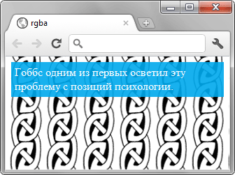

В примере 2 показано применение формата RGBA для создания полупрозрачного фона.
Пример 2. Полупрозрачный фон
HTML5CSS3IE 9+CrOpSaFx
<!DOCTYPE html>
<html>
<head>
<meta charset="utf-8">
<title>rgba</title>
<style>
body { background: url(images/pattern-left.png); }
div {
background: rgba(0, 170, 238, 0.9); /* Цвет фона */
color: #fff; /* Цвет текста */
padding: 5px; /* Поля вокруг текста */
}
</style>
</head>
<body>
<div>Гоббс одним из первых осветил эту проблему с позиций психологии.</div>
</body>
</html>
Результат данного примера показан на рис. 2. Значение непрозрачности для фона установлено 90%.

Рис. 2. Полупрозрачный фон и непрозрачный текст
�